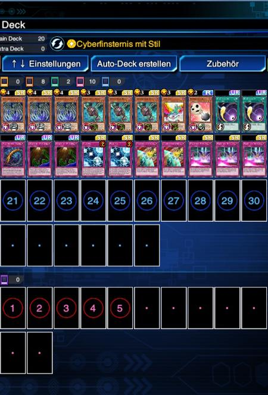
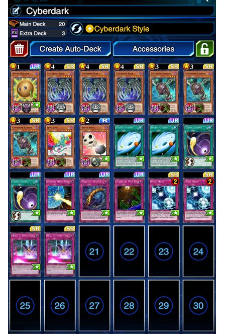

Duelist :
Rubii
Set Skill :
Cyberdark Style
Date :
December 9
A comment from Rubii :
How to use: Use Cannon to search Edge. Use Traps to stall. I always send Bacon Saver to grave first, unless I am 100% sure I can OTK next turn by sending Leng Ling to grave. Cosmo Cyclon to destroy important Spells/Traps (Against Yubel the field spell) or to ensure OTK. Floodgate works extremely well against Cosmo Brain (Blue-Eyes).
You can also search for Canon or Edge with Zanes Skill once your LP fell for 1800. Draining Shield allows you to search more often if needed as you gain LP back. Hard Matchups are Anti-Trap, Anti-Meta,Busterblader and everything with Jinzo, Masked Heroes, Spellbook, Blue-Eyes and Vampire are usually pretty easy.
Take care while playing against Vampires. Dont send anything to the grave while the field spell is active. You'll kill yourself.
Also be carefull when playing against Masked Heroes. If he attacks with Celestial he can destroy your equipped Canon or Leng Ling.

Duelist :
darkchip86
Set Skill :
Cyberdark Style
Date :
December 30
A comment from darkchip86 :
Quite a simple Cyberdark build just using Edge and Cannon. I usually always throw Bacon Saver to the grave first with Cannon unless I have Sphere Kuriboh and/or Pulse Mines to stop those otk's, then I may dump Leng Ling first ready for my 2nd Edge to be summoned and a double direct attack.
Before I amended the deck to this build, I found it difficult against backrow like Widespread Ruin, Canadia and Floodgate so went for 4 back row destruction cards which seem to work really well.
If against Vamps, I try to save Cosmic Cyclone (keep it set) until Kingdom is played. And against dragunity, keep it set until Aklas is in the spell/trap zone.
And running Cosmic Cyclone helps to get Cyberdark Style skill active which is great if they've taken out 1 Edge and you are after a 2nd as you will either get Edge or Cannon (which you can discard for Edge).
Just keep bashing away at those life points (2 attacks per monster that has Leng Ling equipped!) and using your traps, sphere Kuriboh and Bacon Saver wisely and you usually end up with a win! Haven't really had much trouble, I only lost one game to Mind Scan Masked Hero as he knew what card to Cyclone to OTK me.
